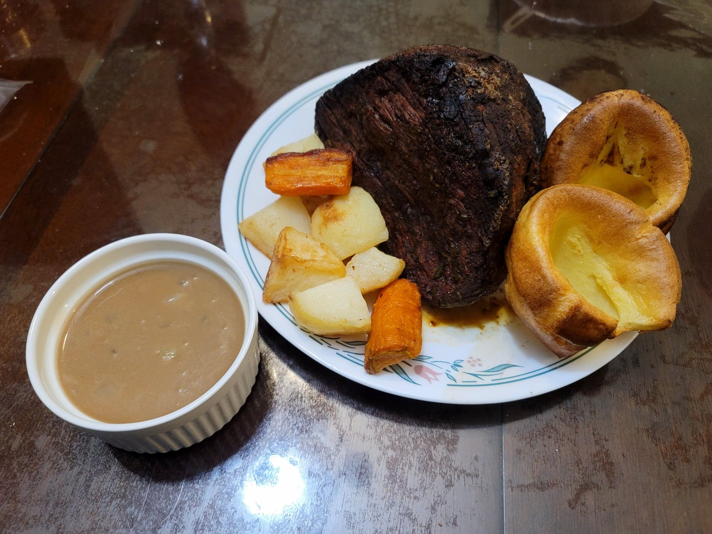

Sunday Roast

Ingredients:
Yorkshire Pudding:
- 1/2 cup (74 g) Flour
- 1/4 tsp Salt
- 1/2 cup (118 ml) Milk, warm
- 2 Eggs
- 12 tsp Vegetable oil/Lard or Fat from beef roast
Beef Roast:
- 3 lb Beef rump or round roast
- 1 tbsp Vegetable oil
- 1 tbsp Salt
- 2 tsp Black pepper
- 1 tbsp Fresh rosemary, finely chopped
Roast Vegetables:
- 6-8 Gold potatoes, cut into 8 pieces
- 1-2 Large carrots, cut into 4 segments and then halved
- 6 tbsp Vegetable oil or Lard
- 1/2 tsp Salt
Gravy:
- 3 tbsp Butter
- 1 Onion, diced or thinly sliced
- 3 tbsp Flour
- 3 cups Beef broth
- Salt, to taste
- Pepper, to taste
Instructions:
- Preheat an oven to 400 degrees Fahrenheit.
- For the yorkshire pudding, combine the flour and salt into a large mixing bowl. Whisk constantly while slowly pouring in the milk to prevent lumps. Then whisk in the eggs. Cover and refrigerate for about 30 minutes or more.
- For the beef roast, massage the beef with the oil. Then massage in the salt, pepper, and rosemary. Heat a cast iron skillet over medium-high heat. Sear the beef all over for about 2-3 minutes per side. Then place the skillet with the beef into the oven and bake for 15 minutes per pound for rare or 20 minutes per pound for medium.
- For the vegetables, place the oil in a roasting pan and let heat up in the oven. Meanwhile, add the potatoes and carrots to a pot and cover with water. Bring to a boil and then let simmer for about 2-3 minutes.
- Then strain the vegetables from the water. Remove the roasting pan from the oven and gently add in the potatoes and carrots. Season with the salt and carefully toss in the oil to coat. Return to the oven and roast for 40-45 minutes or until fork tender, turning and tossing occasionally to ensure even browning.
- For the gravy, melt the butter in a medium saucepan over medium heat. Add in the onion and sauté until softened, 5-7 minutes. Then whisk in the flour. Toast the flour until darkened to preference, whisking constantly. (The darker the flour, the darker the gravy.) Then gradually whisk in the broth. Simmer until thickened to preference and then season with salt and pepper.
- Once the beef and vegetables are done, reserve any excess fat/oil from their pans to use for the yorkshire pudding. Raise the oven temperature to 425 degrees Fahrenheit.
- Lightly grease a muffin tray. Then for each cup of the muffin tray, add 1 tsp of fat. Place into the oven for about 10 minutes, or until the fat starts smoking.
- Remove the muffin tray from the oven. Fill each cup of the tray 1/3 of the way filled with the yorkshire pudding batter. Return the tray to the oven and bake for 15-20 minutes, or until browned and puffed. Do not open the oven door too early, as it may cause them to deflate. Transfer to a serving plate with the roast beef and vegetables.
- Serve immediately. To serve, slice the beef and drizzle with the gravy.